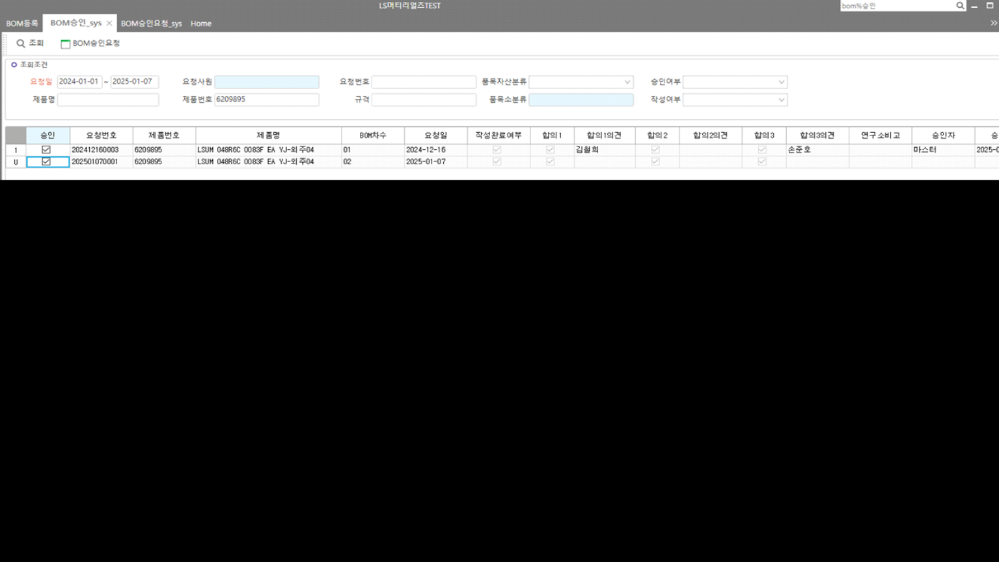

25.01.07 엘에스머트리얼즈 BOM승인 - 승인 테스트 서버 오류 건
DROP PROC sys_SWPDBOMCfmSave_TTEST
GO
CREATE PROC sys_SWPDBOMCfmSave_TTEST
@xmlDocument NVARCHAR(MAX) ,
@xmlFlags INT = 0,
@ServiceSeq INT = 0,
@WorkingTag NVARCHAR(10)= '',
@CompanySeq INT = 1,
@LanguageSeq INT = 1,
@UserSeq INT = 0,
@PgmSeq INT = 0
AS
DECLARE @MessageType INT,
@Status INT,
@Results NVARCHAR(250),
@ItemSeq INT,
@XmlDoc NVARCHAR(MAX),
@ItemBOMRev NCHAR(2),
@OriItemBOMRev NCHAR(2),
@StdDate NCHAR(8)
-- 서비스 마스타 등록 생성
CREATE TABLE #TPDBOMManagement (WorkingTag NCHAR(1) NULL)
EXEC dbo._SCAOpenXmlToTemp @xmlDocument, @xmlFlags, @CompanySeq, @ServiceSeq, 'DataBlock1', '#TPDBOMManagement'
IF @@ERROR \<> 0 RETURN
ALTER TABLE #TPDBOMManagement ADD Serl INT
EXEC dbo._SCOMMessage @MessageType OUTPUT,
@Status OUTPUT,
@Results OUTPUT,
6 , -- 중복된 @1 @2가(이) 입력되었습니다.(SELECT * FROM _TCAMessageLanguage WHERE MessageSeq = 6)
@LanguageSeq ,
0,''
UPDATE #TPDBOMManagement
SET Result = N'이미 BOM이 구성된 품목입니다.',
MessageType = @MessageType ,
Status = @Status
FROM #TPDBOMManagement AS A
JOIN _TPDBOM AS B WITH(NOLOCK) ON B.CompanySeq = @CompanySeq
AND B.ItemSeq = A.ItemSeqTree
AND B.ItemBOMRev = A.ItemBomRevTree
WHERE A.Status = 0
AND A.WorkingTag IN ('A','U')
-- 실테이블 기준으로 체크하도록 'sys_TPDBOMReqManagement' JOIN 절 추가 23.12.29 SJPARK
EXEC dbo._SCOMMessage @MessageType OUTPUT,
@Status OUTPUT,
@Results OUTPUT,
6 , -- 중복된 @1 @2가(이) 입력되었습니다.(SELECT * FROM _TCAMessageLanguage WHERE MessageSeq = 6)
@LanguageSeq ,
0,'' -- SELECT * FROM _TCADictionary WHERE Word like '%거래처%'
UPDATE #TPDBOMManagement
SET Result = CASE WHEN ISNULL(B.Agree1,'0') = '0' THEN N'합의1 승인하지 않았습니다.'
WHEN ISNULL(B.Agree2,'0') = '0' THEN N'합의2 승인하지 않았습니다.'
WHEN ISNULL(B.Agree3,'0') = '0' THEN N'합의3 승인하지 않았습니다.'
--WHEN ISNULL(CheckDelvTeamManager,'0') = '0' THEN N'개발팀장 승인하지 않았습니다.'
ELSE '' END,
MessageType = @MessageType,
Status = @Status
FROM #TPDBOMManagement AS A
JOIN sys_TPDBOMReqManagement AS B WITH(NOLOCK) ON B.CompanySeq = @CompanySeq
AND B.BOMReqSeq = A.BOMReqSeq
WHERE WorkingTag IN ('A','U')
AND Status = 0
AND ((ISNULL(B.Agree1,'0') = '0')
OR (ISNULL(B.Agree2,'0') = '0')
OR (ISNULL(B.Agree3,'0') = '0')
--OR (ISNULL(CheckDelvTeamManager,'0') = '0')
)
IF EXISTS ( SELECT 1 FROM #TPDBOMManagement WHERE Status \<> 0)
BEGIN
SELECT * FROM #TPDBOMManagement
RETURN
END
-- 20240709.역전개 로직 추가
CREATE TABLE #ReversedBOM
(
CompanySeq INT NOT NULL,
Seq INT NOT NULL,
ParentSeq INT NOT NULL,
ItemSeq INT NOT NULL,
Sort INT NOT NULL,
TreeLevel INT NOT NULL,
ItemRev CHAR(4) NOT NULL,
NeedQtyNumerator DECIMAL(20,10) null,
NeedQtyDenominator DECIMAL(20,10) null,
TextLevel NVARCHAR(60) null
)
-- 역전개 통해 상위 품목에 대한 정보 가져오기
SELECT @ItemSeq = A.ItemSeqTree,
@ItemBOMRev = A.ItemBomRevTree
FROM #TPDBOMManagement AS A
WHERE A.Status = 0
--AND A.WorkingTag = 'D'
-- 승인취소
IF EXISTS ( SELECT 1 FROM #TPDBOMManagement WHERE Status = 0 AND WorkingTag = 'D')
BEGIN
--SELECT @ItemBOMRev = RIGHT('00' + CONVERT(NVARCHAR, CONVERT(INT, @ItemBOMRev) -1),2)
INSERT INTO #ReversedBOM
SELECT @CompanySeq, 1, 0, @ItemSeq, 1, 1, @ItemBOMRev, 1, 1, '1'
EXEC _SPDReversBOM @CompanySeq, @ItemSeq, @ItemBOMRev, 1, 1, 0, '1'
DELETE #ReversedBOM FROM #ReversedBOM WHERE NeedQtyDenominator = 0 -- 소요량이 필수이기 때문에 분모가 0인 건은 삭제
END
-- 승인처리
IF EXISTS ( SELECT 1 FROM #TPDBOMManagement WHERE Status = 0 AND WorkingTag = 'A')
BEGIN
SELECT @OriItemBOMRev = RIGHT('00' + CONVERT(NVARCHAR, CONVERT(INT, @ItemBOMRev) -1),2)
INSERT INTO #ReversedBOM
SELECT @CompanySeq, 1, 0, @ItemSeq, 1, 1, @OriItemBOMRev, 1, 1, '1'
EXEC _SPDReversBOM @CompanySeq, @ItemSeq, @OriItemBOMRev, 1, 1, 0, '1'
DELETE #ReversedBOM FROM #ReversedBOM WHERE NeedQtyDenominator = 0 -- 소요량이 필수이기 때문에 분모가 0인 건은 삭제
END
SELECT @StdDate = CONVERT(NCHAR(8), GETDATE(), 112)
-- 승인 취소
IF EXISTS ( SELECT 1 FROM #TPDBOMManagement WHERE Status = 0 AND WorkingTag = 'D')
BEGIN
DELETE _TPDBOMRemarks
FROM _TPDBOMRemarks AS A
JOIN sys_TPDBOMRemarksReq C WITH(NOLOCK) ON A.ItemSeq = C.ItemSeq
AND A.ItemBomRev = C.ItemBomRev
AND A.CompanySeq = C.CompanySeq
JOIN #TPDBOMManagement AS B ON A.ItemSeq = B.ItemSeqTree
--AND A.Serl = B.Serl
WHERE B.WorkingTag = 'D'
AND B.Status = 0
AND A.CompanySeq = @CompanySeq
--AND A.ItemBomRev = '00'
AND A.ItemBomRev = B.ItemBomRevTree
IF @@ERROR \<> 0 RETURN
DELETE _TPDBOMProc
FROM _TPDBOMProc AS A
JOIN sys_TPDBOMProcReq C WITH(NOLOCK) ON A.ItemSeq = C.ItemSeq
AND A.ItemBomRev = C.ItemBomRev
AND A.CompanySeq = C.CompanySeq
AND A.SubItemSeq = C.SubItemSeq
AND A.SubItemBomRev = C.SubItemBomRev
AND A.GoodSeq = C.GoodSeq
AND A.GoodBomRev = C.GoodBomRev
AND A.ProcRev = C.ProcRev
JOIN #TPDBOMManagement AS B ON A.ItemSeq = B.ItemSeqTree
WHERE B.WorkingTag = 'D'
AND B.Status = 0
AND A.CompanySeq = @CompanySeq
--AND A.ItemBomRev = '00'
AND A.ItemBomRev = B.ItemBomRevTree
IF @@ERROR \<> 0 RETURN
DELETE _TPDBOM
FROM _TPDBOM AS A
JOIN sys_TPDBOMReq C WITH(NOLOCK) ON A.CompanySeq = C.CompanySeq
AND A.ItemSeq = C.ItemSeq
AND A.ItemBomRev = C.ItemBomRev
AND A.SubItemSeq = C.SubItemSeq
AND A.SubItemBomRev = C.SubItemBomRev
JOIN #TPDBOMManagement AS B ON A.ItemSeq = B.ItemSeqTree
--AND A.Serl = B.Serl
WHERE B.WorkingTag = 'D'
AND B.Status = 0
AND A.CompanySeq = @CompanySeq
--AND A.ItemBomRev = '00'
AND A.ItemBomRev = B.ItemBomRevTree
IF @@ERROR \<> 0 RETURN
-- 하위품목 삭제시 모품목 Management에 최종수정일 업데이트 -- 11.07.08 BY 김세호
UPDATE _TPDBOMManagement
SET LastUptDate = CONVERT(NCHAR(8), GETDATE(),112)
FROM _TPDBOMManagement A WITH(NOLOCK)
JOIN #TPDBOMManagement B ON A.ItemSeq = B.ItemSeqTree
WHERE A.ItemBomRev = B.ItemBomRevTree
AND A.CompanySeq = @CompanySeq
-- 하위품목 모두 삭제 됐을경우 모품목 BOMManagement 데이터 삭제 -- 11.07.08 BY 김세호
IF NOT EXISTS(SELECT 1
FROM _TPDBOM AS A
JOIN #TPDBOMManagement AS B ON A.ItemSeq = B.ItemSeqTree
--AND A.Serl = B.Serl
WHERE B.WorkingTag = 'D'
AND B.Status = 0
AND A.CompanySeq = @CompanySeq
--AND A.ItemBomRev = '00'
AND A.ItemBomRev = B.ItemBomRevTree
)
BEGIN
-- 차수정보 로그 남기기
SELECT DISTINCT A.*,
CONVERT(NVARCHAR(10),'D') AS WorkingTag,
CONVERT(INT, 0) AS Status
INTO #TPDBOMManagement1
FROM _TPDBOMManagement AS A
JOIN #TPDBOMManagement AS B ON A.CompanySeq = @CompanySeq
AND A.ItemSeq = B.ItemSeqTree
AND A.ItemBomRev = '00'
-- 로그테이블 남기기(마지막 파라메터는 반드시 한줄로 보내기)
EXEC _SCOMLog @CompanySeq ,
@UserSeq ,
'_TPDBOMManagement', -- 원테이블명
'#TPDBOMManagement1', -- 템프테이블명
'ItemSeq, ItemBomRev' , -- 키가 여러개일 경우는 , 로 연결한다.
'CompanySeq, ItemSeq, ItemBomRev, RegDate, LastUptDate, FrTermValidity, ToTermValidity, BatchSize, Remark, LastUserSeq, LastDateTime, FileSeq, ItemBOMRevRemark, RegDateTime'
DELETE _TPDBOMManagement
FROM _TPDBOMManagement A
JOIN #TPDBOMManagement B ON A.ItemSeq = B.ItemSeqTree
WHERE A.ItemBomRev = '00'
AND A.CompanySeq = @CompanySeq
END
-- 20240709.Upper BOM 삭제
DELETE FROM #ReversedBOM WHERE ItemSeq = @ItemSeq AND ItemRev = @ItemBOMRev
SELECT A.*,
CONVERT(NVARCHAR(10),'D') AS WorkingTag,
CONVERT(INT, 0) AS Status
INTO #TPDBOMLog
FROM _TPDBOM AS A
JOIN #ReversedBOM C WITH(NOLOCK) ON A.CompanySeq = C.CompanySeq
AND A.ItemSeq = C.ItemSeq
AND A.ItemBomRev = C.ItemRev
WHERE A.CompanySeq = @CompanySeq
-- 로그테이블 남기기(마지막 파라메터는 반드시 한줄로 보내기)
EXEC _SCOMLog @CompanySeq ,
@UserSeq ,
'_TPDBOM', -- 원테이블명
'#TPDBOMLog', -- 템프테이블명
'ItemSeq, ItemBomRev, Serl' , -- 키가 여러개일 경우는 , 로 연결한다.
'CompanySeq,ItemSeq,ItemBomRev,Serl,UserSeq,SubItemSeq,SubItemBomRev,UnitSeq,SubUnitSeq,NeedQtyNumerator,NeedQtyDenominator,HaveChild,InLossRate,OutLossRate,
ECOSeq,ECOItemSerl,ECOChangeSerl,ECOApplySerl,FrApplyDate,ToApplyDate,Location,Remark,IsCfm,LastUserSeq,LastDateTime,SMDelvType,PgmSeq'
SELECT A.*,
CONVERT(NVARCHAR(10),'D') AS WorkingTag,
CONVERT(INT, 0) AS Status
INTO #TPDBOMManagementLog
FROM _TPDBOMManagement AS A
JOIN #ReversedBOM C WITH(NOLOCK) ON A.CompanySeq = C.CompanySeq
AND A.ItemSeq = C.ItemSeq
AND A.ItemBomRev = C.ItemRev
WHERE A.CompanySeq = @CompanySeq
-- 로그테이블 남기기(마지막 파라메터는 반드시 한줄로 보내기)
EXEC _SCOMLog @CompanySeq ,
@UserSeq ,
'_TPDBOMManagement', -- 원테이블명
'#TPDBOMManagementLog', -- 템프테이블명
'ItemSeq, ItemBomRev' , -- 키가 여러개일 경우는 , 로 연결한다.
'CompanySeq, ItemSeq, ItemBomRev, RegDate, LastUptDate, FrTermValidity, ToTermValidity, BatchSize, Remark, LastUserSeq, LastDateTime, FileSeq, ItemBOMRevRemark, RegDateTime'
DELETE _TPDBOM
FROM _TPDBOM AS A
JOIN #ReversedBOM C WITH(NOLOCK) ON A.CompanySeq = C.CompanySeq
AND A.ItemSeq = C.ItemSeq
AND A.ItemBomRev = C.ItemRev
WHERE A.CompanySeq = @CompanySeq
IF @@ERROR \<> 0 RETURN
DELETE _TPDBOMManagement
FROM _TPDBOMManagement AS A
JOIN #ReversedBOM C WITH(NOLOCK) ON A.CompanySeq = C.CompanySeq
AND A.ItemSeq = C.ItemSeq
AND A.ItemBomRev = C.ItemRev
WHERE A.CompanySeq = @CompanySeq
IF @@ERROR \<> 0 RETURN
SELECT * FROM #TPDBOMManagement
RETURN
END
IF EXISTS ( SELECT 1 FROM #TPDBOMManagement WHERE Status = 0 AND WorkingTag = 'A')
BEGIN
-- 내부코드 채번
DECLARE @Count INT,
@Seq INT ,
@Date NCHAR(8),
@MaxNo NVARCHAR(50)
SELECT @Count = COUNT(1) FROM #TPDBOMManagement WHERE WorkingTag = 'A' AND Status = 0
SELECT @Date = CONVERT(VARCHAR,GETDATE(),112)
IF @Count > 0
BEGIN
EXEC @Seq = dbo._SCOMCreateSeq @CompanySeq, '_TPDBOM', 'Serl', @Count
SELECT @Seq = ISNULL(@Seq, 0)
-- Temp Talbe 에 생성된 키값 UPDATE
UPDATE #TPDBOMManagement
SET Serl = @Seq + DataSeq
WHERE WorkingTag = 'A'
AND Status = 0
END
--_TPDBOMManagement
INSERT INTO _TPDBOMManagement
(
CompanySeq , ItemSeq , ItemBomRev , RegDate , LastUptDate ,
FrTermValidity , ToTermValidity , BatchSize , Remark , LastUserSeq ,
LastDateTime , FileSeq , ItemBOMRevRemark , RegDateTime
)
SELECT @CompanySeq ,B.ItemSeq ,A.ItemBomRevTree , B.RegDate,B.LastUptDate ,
B.FrTermValidity ,B.ToTermValidity ,B.BatchSize , B.Remark ,@UserSeq ,
GETDATE() ,B.FileSeq ,B.ItemBOMRevRemark, GETDATE()
FROM #TPDBOMManagement AS A
JOIN sys_TPDBOMReqManagement AS B WITH(NOLOCK) ON A.ItemSeqTree = B.ItemSeq
AND B.CompanySeq = @CompanySeq
AND A.ItemBomRevTree = B.ItemBOMRevRemark
LEFT OUTER JOIN _TPDBOMManagement AS C WITH(NOLOCK) ON B.CompanySeq = C.CompanySeq
AND B.ItemSeq = C.ItemSeq
AND B.ItemBOMRevRemark = C.ItemBomRev
WHERE A.WorkingTag IN ('A','U')
AND A.Status = 0
AND C.CompanySeq IS NULL
IF @@ERROR \<> 0 RETURN
-- _TPDBOM
INSERT INTO _TPDBOM
(
CompanySeq , ItemSeq , ItemBomRev , Serl , UserSeq ,
SubItemSeq , SubItemBomRev , UnitSeq , SubUnitSeq , NeedQtyNumerator ,
NeedQtyDenominator , HaveChild , InLossRate , OutLossRate , ECOSeq ,
ECOItemSerl , ECOChangeSerl , ECOApplySerl ,
FrApplyDate , ToApplyDate , Location , Remark , IsCfm ,
LastUserSeq , LastDateTime , SMDelvType, PgmSeq
)
SELECT @CompanySeq ,B.ItemSeq ,B.ItemBomRev ,B.Serl ,B.UserSeq ,
B.SubItemSeq ,B.SubItemBomRev ,B.UnitSeq ,B.SubUnitSeq ,B.NeedQtyNumerator ,
B.NeedQtyDenominator ,B.HaveChild ,B.InLossRate ,B.OutLossRate ,B.ECOSeq ,
B.ECOItemSerl , B.ECOChangeSerl , B.ECOApplySerl ,
B.FrApplyDate ,B.ToApplyDate ,B.Location ,B.Remark ,B.IsCfm ,
@UserSeq ,GETDATE() , B.SMDelvType ,@PgmSeq
FROM #TPDBOMManagement AS A
JOIN sys_TPDBOMReq B ON B.ItemSeq = A.ItemSeqTree AND B.ItemBomRev = A.ItemBomRevTree AND B.CompanySeq = @CompanySeq
WHERE A.WorkingTag = 'A'
AND A.Status = 0
AND NOT EXISTS (SELECT 1 FROM _TPDBOM WHERE CompanySeq = @CompanySeq AND ItemSeq = A.ItemSeqTree AND ItemBomRev = A.ItemBomRevTree)
IF @@ERROR \<> 0 RETURN
--UPDATE P
-- SET HaveChild = '1'
-- FROM _TPDBOM AS P
-- JOIN #TPDBOMManagement AS A ON P.SubItemSeq = A.ItemSeq
-- AND P.SubItemBomRev = '00'
-- WHERE P.CompanySeq = @CompanySeq
-- IF @@ERROR \<> 0 RETURN
-- UPDATE P
-- SET HaveChild = '1'
-- FROM _TPDBOM AS P
-- JOIN (SELECT A.ItemSeq, '00' AS ItemBomRev, A.SubItemSeq, A.SubItemBomRev
-- FROM #TPDBOMManagement AS A
-- JOIN _TPDBOM AS B WITH(NOLOCK) ON B.ItemSeq = A.SubItemSeq
-- AND B.ItemBomRev = '00'
-- WHERE B.CompanySeq = @CompanySeq
-- ) AS O ON P.ItemSeq = O.ItemSeq
-- AND P.ItemBOMRev = O.ItemBomRev
-- AND P.SubItemSeq = O.SubItemSeq
-- AND P.SubItemBOMRev = O.SubItemBomRev
-- WHERE P.CompanySeq = @CompanySeq
-- IF @@ERROR \<> 0 RETURN
--_TPDBOMProc
INSERT INTO _TPDBOMProc
(
CompanySeq,GoodSeq,GoodBomRev,ItemSeq,ItemBomRev,SubItemSeq,SubItemBomRev,
ProcRev,ProcSeq,WorkCenterSeq,LastUserSeq,LastDateTime
)
SELECT @CompanySeq ,A.GoodSeq,A.GoodBomRev,A.ItemSeq ,A.ItemBomRev ,A.SubItemSeq ,A.SubItemBomRev ,
A.ProcRev ,A.ProcSeq ,ISNULL(A.WorkCenterSeq, 0) ,@UserSeq ,GETDATE()
FROM sys_TPDBOMProcReq AS A
JOIN #TPDBOMManagement R WITH(NOLOCK) ON A.ItemSeq = R.ItemSeqTree
JOIN _TDAItem AS I WITH(NOLOCK) ON A.SubItemSeq = I.ItemSeq
AND I.CompanySeq = @CompanySeq
JOIN _TDAItemAsset AS S WITH(NOLOCK) ON I.AssetSeq = S.AssetSeq
AND I.CompanySeq = S.CompanySeq
WHERE R.WorkingTag IN ('A','U')
AND R.Status = 0
AND A.CompanySeq = @CompanySeq
AND A.ProcRev > ''
AND A.ProcSeq > 0
AND S.SMAssetGrp IN (6008004, 6008005)
AND NOT EXISTS (SELECT 1 FROM _TPDBOMProc WHERE CompanySeq = @CompanySeq
AND GoodSeq = A.GoodSeq -- 송기연 추가 공정품이 여러제품에 쓰일 경우 업데이트가 안되어 추가 20100402
AND GoodBOmRev = A.GoodBomRev -- 송기연 추가 공정품이 여러제품에 쓰일 경우 업데이트가 안되어 추가 20100402
AND ItemSeq = A.ItemSeq
AND ItemBomRev = A.ItemBomRev
AND SubItemSeq = A.SubItemSeq
AND SubItemBomRev = A.SubItemBomRev)
--AND ProcRev = A.ProcRev )
AND EXISTS (SELECT 1 FROM _TPDROUItemProcRev WHERE CompanySeq = @CompanySeq
AND ItemSeq = A.GoodSeq
AND ItemSeq > 0 )
IF @@ERROR \<> 0 RETURN
--_TPDBOMRemarks
INSERT INTO _TPDBOMRemarks
(
CompanySeq,ItemSeq,ItemBomRev,Serl,
Remark1,Remark2,Remark3,Remark4,Remark5,
Remark6,Remark7,Remark8,Remark9,Remark10,
LastUserSeq,LastDateTime
)
SELECT @CompanySeq ,A.ItemSeq ,A.ItemBomRev ,B.Serl ,
ISNULL(A.Remark1,''),ISNULL(A.Remark2,''),ISNULL(A.Remark3,''),ISNULL(A.Remark4,''),ISNULL(A.Remark5,''),
ISNULL(A.Remark6,''),ISNULL(A.Remark7,''),ISNULL(A.Remark8,''),ISNULL(A.Remark9,''),ISNULL(A.Remark10,''),
@UserSeq ,GETDATE()
FROM sys_TPDBOMRemarksReq AS A
JOIN #TPDBOMManagement B ON A.CompanySeq = @CompanySeq AND A.ItemSeq = B.ItemSeqTree
WHERE B.WorkingTag IN ('A','U')
AND B.Status = 0
AND NOT EXISTS (SELECT 1 FROM _TPDBOMRemarks WHERE CompanySeq = @CompanySeq
AND ItemSeq = A.ItemSeq
AND ItemBomRev = A.ItemBomRev
AND Serl = B.Serl )
AND A.ItemBomRev = B.ItemBomRevTree
AND (A.Remark1 > ''
OR A.Remark2 > ''
OR A.Remark3 > ''
OR A.Remark4 > ''
OR A.Remark5 > ''
OR A.Remark6 > ''
OR A.Remark7 > ''
OR A.Remark8 > ''
OR A.Remark9 > ''
OR A.Remark10 > '')
IF @@ERROR \<> 0 RETURN
-- 20240709.역전개 통해 생성된 BOM 생성
SELECT A.ItemSeq,
A.ItemRev AS OriItemRev,
CONVERT(NCHAR(2), '') AS ItemRev
INTO #CreateUpperBom
FROM #ReversedBOM AS A
WHERE A.ItemSeq \<> @ItemSeq
-- @@@@ 업데이트 안됨
UPDATE A
SET ItemRev = RIGHT('00' + CONVERT(NVARCHAR, CONVERT(INT, B.MaxItemBomRev) + 1),2)
FROM #CreateUpperBom AS A
JOIN (SELECT A.ItemSeq, MAX(A.ItemBomRev) AS MaxItemBomRev
FROM _TPDBOMManagement AS A WITH(NOLOCK)
WHERE A.CompanySeq = @CompanySeq
AND A.ItemSeq IN (SELECT DISTINCT ItemSeq FROM #CreateUpperBom)
GROUP BY A.ItemSeq) AS B ON A.ItemSeq = B.ItemSeq
INSERT INTO _TPDBOMManagement
(
CompanySeq , ItemSeq , ItemBomRev , RegDate , LastUptDate ,
FrTermValidity , ToTermValidity , BatchSize , Remark , LastUserSeq ,
LastDateTime , FileSeq , ItemBOMRevRemark , RegDateTime
)
SELECT @CompanySeq, A.ItemSeq, A.ItemRev, @StdDate, @StdDate,
'' , '' , 0 , '' , @UserSeq,
GETDATE() , 0 , A.ItemRev, GETDATE()
FROM #CreateUpperBom AS A
JOIN _TPDBOMManagement AS B WITH(NOLOCK) ON B.CompanySeq = @CompanySeq
AND A.ItemSeq = B.ItemSeq
AND A.OriItemRev = B.ItemBomRev
IF @@ERROR \<> 0 RETURN
INSERT INTO _TPDBOM
(
CompanySeq , ItemSeq , ItemBomRev , Serl , UserSeq,
SubItemSeq , SubItemBomRev, UnitSeq , SubUnitSeq , NeedQtyNumerator,
NeedQtyDenominator, HaveChild , InLossRate , OutLossRate, ECOSeq,
ECOItemSerl , ECOChangeSerl, ECOApplySerl, FrApplyDate, ToApplyDate,
Location , Remark , IsCfm , LastUserSeq, LastDateTime,
SMDelvType , PgmSeq
)
SELECT @CompanySeq , A.ItemSeq , B.ItemRev , A.Serl , A.UserSeq ,
CASE WHEN ISNULL(C.ItemSeq,0) = 0 THEN A.SubItemSeq ELSE C.ItemSeq END AS SubItemSeq,
CASE WHEN A.SubItemSeq = @ItemSeq AND A.SubItemBomRev = @OriItemBOMRev THEN @ItemBOMRev ELSE (CASE WHEN ISNULL(C.ItemSeq,0) = 0 THEN A.SubItemBomRev ELSE C.ItemRev END) END AS SubItemBomRev,
A.UnitSeq , A.SubUnitSeq , A.NeedQtyNumerator ,
A.NeedQtyDenominator, A.HaveChild , A.InLossRate , A.OutLossRate, A.ECOSeq ,
A.ECOItemSerl , A.ECOChangeSerl, A.ECOApplySerl, A.FrApplyDate, A.ToApplyDate,
A.Location , A.Remark , A.IsCfm , @UserSeq , GETDATE(),
A.SMDelvType , @PgmSeq
FROM _TPDBOM AS A WITH(NOLOCK)
JOIN #CreateUpperBom AS B ON A.ItemSeq = B.ItemSeq
AND A.ItemBomRev = B.OriItemRev
LEFT OUTER JOIN #CreateUpperBom AS C ON A.SubItemSeq = C.ItemSeq
AND A.SubItemBomRev = C.OriItemRev
WHERE A.CompanySeq = @CompanySeq
AND A.ItemSeq IN (SELECT DISTINCT ItemSeq FROM #CreateUpperBom)
IF @@ERROR \<> 0 RETURN
SELECT * FROM #TPDBOMManagement
RETURN
END
RETURN
/*
GO
BEGIN TRAN
SELECT * FROM _TPDBOM WHERE ItemSeq IN (169890,169891,170138)
exec sys_SWPDBOMCfmSave @xmlDocument=N'\<ROOT>
\<DataBlock1>
\<WorkingTag>D\</WorkingTag>
\<IDX_NO>1\</IDX_NO>
\<DataSeq>1\</DataSeq>
\<Status>0\</Status>
\<Selected>1\</Selected>
\<IsAppl>0\</IsAppl>
\<BOMReqNo>202404230006\</BOMReqNo>
\<RegDate>20240423\</RegDate>
\<Agree1>1\</Agree1>
\<Agree1Remark />
\<Agree2>1\</Agree2>
\<Agree2Remark />
\<Agree3>1\</Agree3>
\<Agree3Remark />
\<CheckDelvTeamManager>0\</CheckDelvTeamManager>
\<DelvTeamManagerRemark />
\<LastEmpName />
\<LastUptDate>20240709\</LastUptDate>
\<RegEmpName>윤태윤\</RegEmpName>
\<ItemName>FIL-원통형LT02 3V 3000F NH AN-4\</ItemName>
\<ItemNo>6204637\</ItemNo>
\<Spec>FIL\</Spec>
\<ItemSClassName>대형Cell\</ItemSClassName>
\<AssetName>반제품(제조)\</AssetName>
\<ItemSeqTree>169890\</ItemSeqTree>
\<BOMReqSeq>84\</BOMReqSeq>
\<ItemBomRevTree>01\</ItemBomRevTree>
\<TABLE_NAME>DataBlock1\</TABLE_NAME>
\<TableName>sys_TPDBOMReqManagement\</TableName>
\</DataBlock1>
\</ROOT>',@xmlFlags=2,@ServiceSeq=54620078,@WorkingTag=N'',@CompanySeq=1,@LanguageSeq=1,@UserSeq=1,@PgmSeq=54620072
SELECT * FROM _TPDBOM WHERE ItemSeq IN (169890,169891,170138)
ROLLBACK TRAN
*/
GO
begin tran
exec sys_SWPDBOMCfmSave_TTEST @xmlDocument=N'\<ROOT>
\<DataBlock1>
\<WorkingTag>A\</WorkingTag>
\<IDX_NO>2\</IDX_NO>
\<DataSeq>1\</DataSeq>
\<Status>0\</Status>
\<Selected>1\</Selected>
\<IsAppl>1\</IsAppl>
\<BOMReqNo>202501070001\</BOMReqNo>
\<RegDate>20250107\</RegDate>
\<Agree1>1\</Agree1>
\<Agree1Remark />
\<Agree2>1\</Agree2>
\<Agree2Remark />
\<Agree3>1\</Agree3>
\<Agree3Remark />
\<CheckDelvTeamManager>0\</CheckDelvTeamManager>
\<DelvTeamManagerRemark />
\<LastEmpName />
\<LastUptDate />
\<RegEmpName>최지웅\</RegEmpName>
\<ItemName>LSUM 048R6C 0083F EA YJ-외주04\</ItemName>
\<ItemNo>6209895\</ItemNo>
\<Spec>UC모듈\</Spec>
\<ItemSClassName>대형모듈\</ItemSClassName>
\<AssetName>반제품(제조)\</AssetName>
\<ItemSeqTree>169993\</ItemSeqTree>
\<BOMReqSeq>226\</BOMReqSeq>
\<ItemBomRevTree>02\</ItemBomRevTree>
\<TABLE_NAME>DataBlock1\</TABLE_NAME>
\<TableName>sys_TPDBOMReqManagement\</TableName>
\</DataBlock1>
\</ROOT>',@xmlFlags=2,@ServiceSeq=54620078,@WorkingTag=N'',@CompanySeq=1,@LanguageSeq=1,@UserSeq=1,@PgmSeq=54620072
rollback tran
